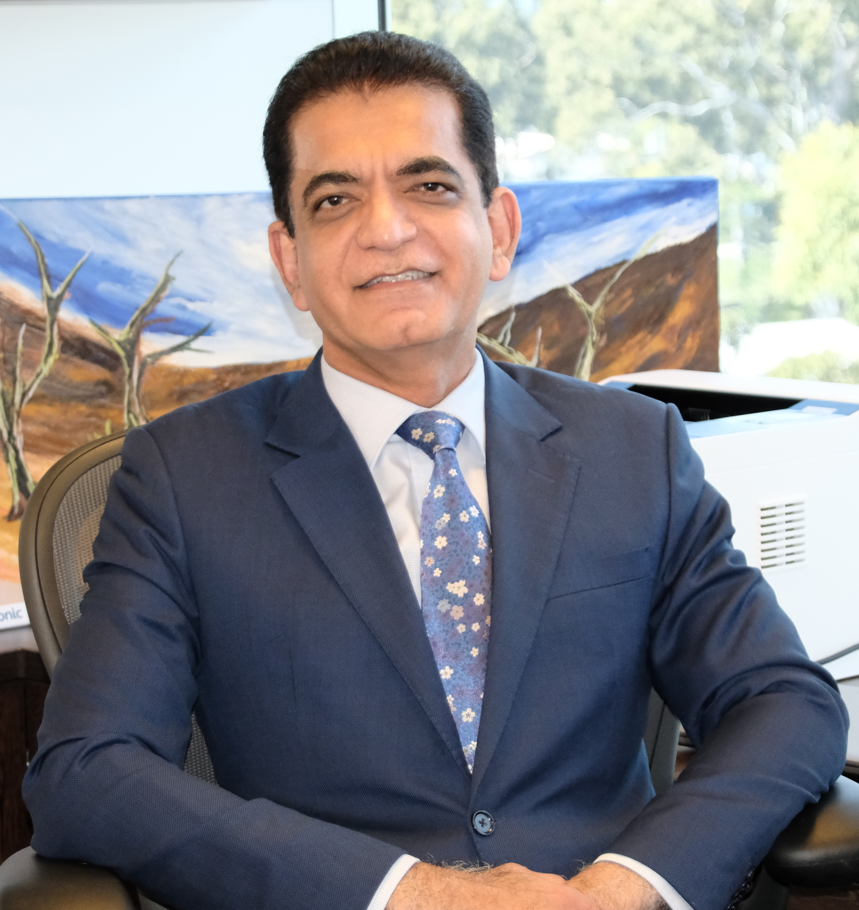
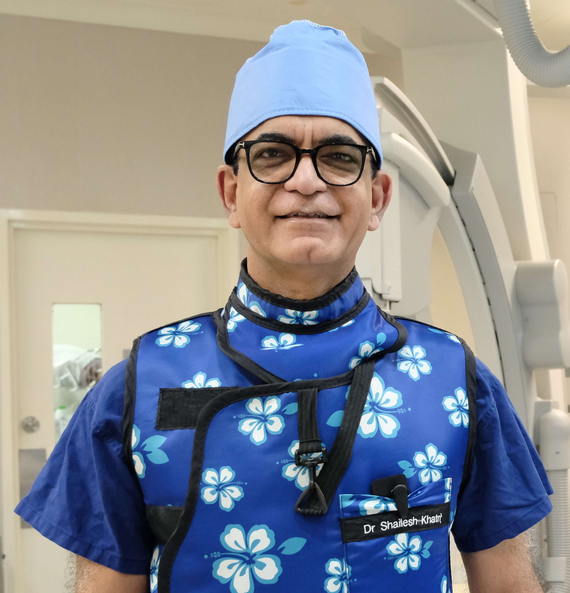
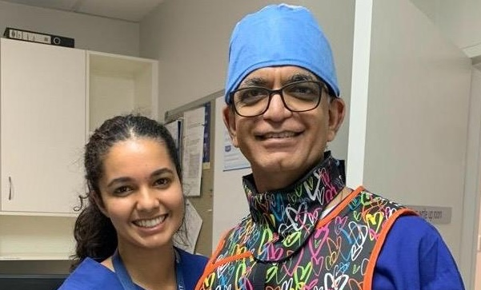
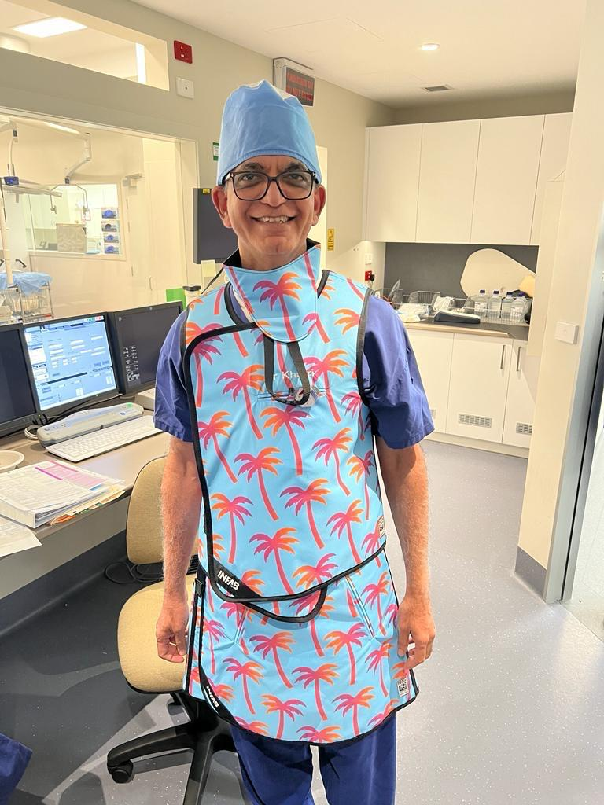

MBBS · FRACP · FCSANZ · SCAI · AMA · ACOR-Accredited TAVI Operator
A highly experienced interventional cardiologist specialising in coronary angiography, angioplasty and stenting, and TAVI. Serving the Gold Coast community for over 25 years with a 24-hour cardiology service at both Pindara Private Hospital and John Flynn Private Hospital.


Originally from Fiji, Dr Khatri migrated to Australia in 1983 where he completed his secondary education in Brisbane before obtaining his medical degree from the University of Queensland. He became a registered medical practitioner in 1990 and went on to complete his cardiology training across The Royal Brisbane Hospital and Prince Charles Hospital in Brisbane, and John Hunter Hospital in Newcastle.
In 2001, Dr Khatri undertook a Fellowship in Interventional Cardiology at St Paul's Hospital in Vancouver under the mentorship of Professor John Webb, an internationally renowned interventional cardiologist. Following his return to Australia later that year, he settled on the Gold Coast and has since become an integral member of the region's interventional cardiology services, performing over 15,000 procedures. Dr Khatri is also accredited by ACOR to perform TAVI procedures.
Dr Shailesh Khatri is a highly experienced interventional cardiologist who has been serving the Gold Coast community for more than 25 years. He specialises in coronary angiography, angioplasty and stenting, and transcatheter aortic valve implantation (TAVI).
Dr Khatri is dedicated to delivering high-quality, patient-centred care, and has provided a 24-hour cardiology service to the Gold Coast for over two decades. Recognising that cardiac emergencies can occur at any time, he prioritises care and timely access to treatment at both Pindara Private Hospital and John Flynn Private Hospital, where he holds admitting rights.
Dr Khatri is passionate about improving both cardiovascular health and overall quality of life for his patients. His approach to patient care is holistic and comprehensive, encompassing appropriate investigations, evidence-based treatment, procedural intervention when required, cardiac rehabilitation, and lifestyle modification. He places strong emphasis on involving patients in decision-making and ensuring they feel supported throughout their cardiac care journey.
Patients seeing Dr Khatri are initially assessed by his experienced cardiac nursing team, who play an important role in patient support and are always available to assist with heart-related concerns. They remain involved throughout each patient's hospital stay, providing a consistent and highly personalised level of care.
In 2001, Dr Khatri undertook a Fellowship at St Paul's Hospital, Vancouver under Professor John Webb, an internationally renowned interventional cardiologist — completing over 1,200 procedures. This world-class training underpins every procedure he performs today.
Over 15,000 procedures performed since settling on the Gold Coast in 2001 — including 400+ TAVI and 1,500+ emergency Primary PCI procedures. Experience at this volume translates directly into superior patient safety and outcomes.
Dr Khatri has provided a 24-hour cardiology service to the Gold Coast for over two decades. Cardiac emergencies receive priority care and timely access to treatment at both Pindara Private Hospital and John Flynn Private Hospital.
Actively involved in postgraduate education and clinical audit programs on the Gold Coast. Dr Khatri regularly participates in professional development and training programs both within Australia and internationally.
Dr Khatri's approach encompasses appropriate investigations, evidence-based treatment, procedural intervention, cardiac rehabilitation, and lifestyle modification. He places strong emphasis on patient involvement in decision-making throughout their care journey.
Patients are initially assessed by Dr Khatri's experienced cardiac nursing team, who are always available for heart-related concerns and remain involved throughout each patient's hospital stay — providing a consistent, highly personalised standard of care.
Since settling on the Gold Coast in 2001 following his international fellowship, Dr Khatri has become an integral member of the region's interventional cardiology services — providing a 24-hour cardiology service for over two decades at both Pindara Private Hospital and John Flynn Private Hospital.
A comprehensive suite of catheter-based cardiac procedures — each underpinned by 25 years of Gold Coast experience, international training, and a 15,000+ procedure track record.
Catheter-based imaging to precisely map the coronary arteries, identify blockages, and guide optimal treatment planning. The gold standard for coronary artery disease diagnosis.
Minimally invasive restoration of coronary blood flow using balloon angioplasty and drug-eluting stents — achieving open-artery results without open-heart surgery.
Emergency angioplasty for acute myocardial infarction — available 24 hours a day, 7 days a week. Rapid restoration of blood flow to limit heart muscle damage. 1,500+ · 24/7
Transcatheter Aortic Valve Implantation — catheter-based valve replacement avoiding open-heart surgery. One of the most experienced TAVI operators on the Gold Coast. 400+ procedures
A referral from your General Practitioner is required for all consultations. Your GP will assess your symptoms, arrange initial tests, and write a referral to Dr Shailesh Khatri.
Contact Dr Khatri with your GP referral on (07) 5598 0322 to schedule a consultation at John Flynn Specialist Suites, Level 3, Suites 301–303, 42 Inland Drive, Tugun QLD 4224.
You will initially be assessed by Dr Khatri's experienced cardiac nursing team. Dr Khatri will then review your history, explain your diagnosis, and plan your care — investigations, medication, procedural intervention, cardiac rehabilitation, or lifestyle modification. His nursing team remains involved throughout your hospital stay, providing personalised, ongoing support.
Cardiac Emergency? Dr Khatri provides a genuine 24/7 emergency cardiac service. In a life-threatening emergency, call 000 immediately.
Recognised as one of Gold Coast's finest cardiologists, reflecting 25 years of consistently excellent clinical outcomes, patient care and medical leadership.
2024A second consecutive award confirming Dr Khatri's standing as one of the region's most accomplished and trusted interventional cardiologists.
2025Appointed to contribute to post-graduate medical education on the Gold Coast, mentoring and training the next generation of cardiologists.
Established the emergency cardiac service at Tweed Hospital over 20 years ago, extending life-saving care to uninsured patients from the NSW Northern Rivers region.
Trained under one of the world's most celebrated interventional cardiologists, completing over 1,200 procedures. This international pedigree is the foundation of a world-class Gold Coast practice.
Combining extensive clinical expertise with a compassionate and personalised approach to care, Dr Khatri remains committed to supporting the heart health and wellbeing of patients across the Gold Coast community.
He holds admitting rights at both John Flynn Private Hospital (Tugun) and Pindara Private Hospital (Benowa) — ensuring patients across the Gold Coast have timely access to expert cardiac care at the hospital most convenient to them, at any time of day or night.
Dr Khatri's 24-hour cardiology service — including over 1,500 emergency Primary PCI procedures for patients experiencing acute heart attacks — reflects over two decades of unwavering commitment to the Gold Coast community.

Over 20 years ago, Dr Khatri identified a critical gap: patients experiencing heart attacks in the Northern Rivers region of NSW — many uninsured — had no access to emergency angioplasty close to home.
Without mandate or financial incentive, he established the Primary PCI service at Tweed Hospital entirely for uninsured patients from across the NSW border. That service operates to this day, saving lives that would otherwise be lost.
This is the measure of Dr Khatri's commitment — not just to his private patients, but to anyone in the community whose heart needs urgent care, regardless of circumstance.
Access to life-saving cardiac care should not depend on which side of a border you live on, or whether you hold private health insurance.

Dr Khatri is reviewed on independent third-party platforms. In line with AHPRA guidelines, we link to these platforms rather than displaying testimonials directly.
AHPRA Compliance: In accordance with Australian Health Practitioner Regulation Agency advertising guidelines, patient testimonials are not reproduced on this website. Patient reviews are independently hosted on the third-party platforms below — follow the links to read unmoderated patient feedback directly.
Everything you need to know before your first appointment. Can't find your answer? Get in touch.
Dr Khatri consults and holds admitting rights at John Flynn Private Hospital (Tugun) and Pindara Private Hospital (Benowa), ensuring patients across the Gold Coast have convenient access to expert cardiac care. A GP referral is required for consultations.
Which hospital or clinic would you like directions to?